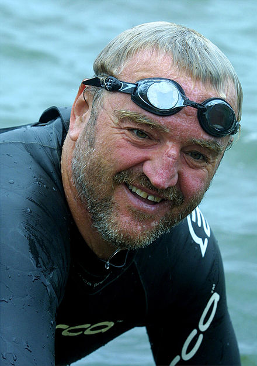

Junior web developer with emphasis and unparalleled love for a Javascript stack
The 11 Phases of a Web Developer's Career
http://code.tutsplus.com/articles/the-11-phases-of-a-web-developers-career-as-illustrated-by-memes--net-30840The career of a web developer is an interesting one with many slopes. Considering a learning curve this steep, you can fully expect to live through periods of frustration, enlightenment, self-righteousness, and every mindset in between.
Recent graduate of Web Development Immersive at General Assembly

Web Development Immersive
https://generalassemb.ly/education/web-development-immersiveWe teach the skills you need to kickstart your career as a developer and a lifelong learner. From programming fundamentals to launching full-stack web apps, you'll learn to solve problems with code while applying industry best practices in a collaborative environment.
Admirer of clean code and minimalistic design
How DRY impacts JavaScript performance ⁄⁄ Faster JavaScript execution for the lazy developer
http://www.slideshare.net/mathiasbynens/how-dry-impacts-javascript-performance-faster-javascript-execution-for-the-lazy-developerLong distance swimmer
Swimming with sharks
http://www.theguardian.com/sport/2009/jan/04/swimmingMartin Strel devours the world's most dangerous rivers, only stopping for red wine at lunch. The Slovene may not look an athlete, but he is the greatest long-distance swimmer the world has known.
Equity options trader
Selling Premium
https://www.tastytrade.com/tt/learn/selling-premium?locale=en-USThe term “selling premium” refers to selling options. There are many benefits to selling premium as opposed to buying premium, but there are environments where each strategy can flourish.
Junior web developer with emphasis and unparalleled love for a Javascript stack
The 11 Phases of a Web Developer's Career
http://code.tutsplus.com/articles/the-11-phases-of-a-web-developers-career-as-illustrated-by-memes--net-30840The career of a web developer is an interesting one with many slopes. Considering a learning curve this steep, you can fully expect to live through periods of frustration, enlightenment, self-righteousness, and every mindset in between.